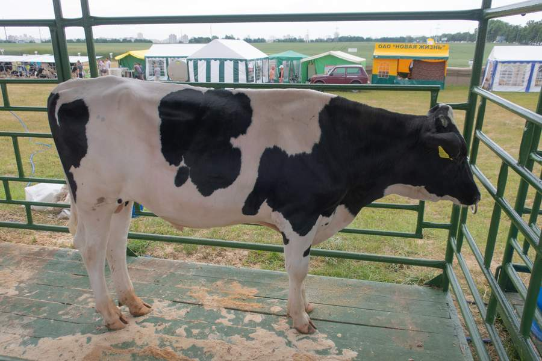
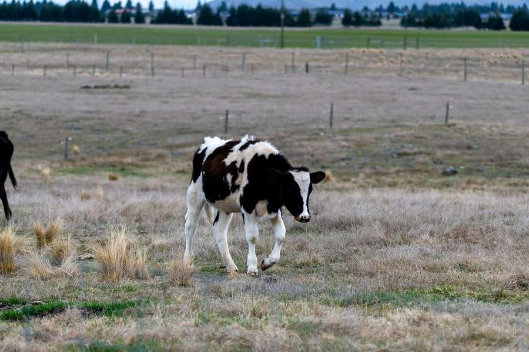

Introduction
Developed in the Netherlands and northern Germany, the Holstein Friesian is the highest-milking dairy breed on Earth.
Almost every modern dairy farm in the world keeps Holsteins. In Pakistan, pure and crossbred Holsteins lead commercial herds for their unmatched milk volume.
Holstein Friesian at a Glance
| Origin | Netherlands & northern Germany (Friesland) |
|---|---|
| Type | Dairy breed |
| Milk per lactation | 8,000–10,500 kg (305 days) |
| Milk fat | 3.7–4.0% |
| Coat | Bold black patches on white; red & white form also recognised |
| Price (indicative) | US $1,500–3,500 per breeding cow |
Varieties & Types of Holstein Friesian
The Holstein Friesian is recognised in four forms:
- American Friesian — Bred in the USA for maximum milk volume — the tallest, highest-yielding form.
- Australian Friesian — Developed for grazing systems in Australia — hardy, fertile and efficient.
- Black & White — The classic, most common form — bold black patches on a white coat.
- Red & White — Carries the recessive red gene. Same milk and size — only the colour differs.
Characteristics

- The Udder — Very large and well attached, with strong milk veins.
- Black & White Coat — Bold black patches on white — the breed's trademark.
- Tall Dairy Frame — Tall, angular body built for milk, not meat.
- Head & Face — Fine dished face; most calves are dehorned young.
Strengths
- Highest milk yield of any breed
- Calves grow fast
- Gentle, easy to handle
- Semen available everywhere
- Proven in Pakistan's big herds
Keep in Mind
A Holstein is a high-input cow: she needs a rich, balanced ration and protection from heat. Heat stress cuts her milk sharply, so shade, water and cooling matter in hot climates.
Milk & Meat Production
A good Holstein gives 8,000–10,500 kg of milk in a 305-day lactation — the US herd average is about 10,400 kg. Good Pakistani herds reach 7,500–10,500 kg in 305 days with proper feeding.
Milk fat averages 3.7–4.0%. Cull cows and bull calves join the beef chain, and heifer calves become tomorrow’s milkers.
Price & Buying Tips
Typical price — international (indicative): US $1,500 – 3,500 — per breeding cow, depending on records & pregnancy. All prices are indicative and move with the market.
Prices vary by country, milk record and pregnancy status. In Pakistan, prices are usually quoted per litre of daily milk, and pedigree cows cost more.
Before You Buy — Checklist
- Milk record of the cow & mother
- Udder — 4 working quarters
- Teats — no lumps or sores
- Hooves & legs sound
- Body condition score 2.75–3.25
- Vaccination & deworming record
- Pregnancy status confirmed
- Milk let-down tested
Photos of the Breed

Frequently Asked Questions
How much milk does a Holstein Friesian give per day?
In a good herd, roughly 25–35 litres per day at peak, totalling 8,000–10,500 kg over a 305-day lactation. Yield depends on feeding, stage of lactation and climate.
What is the price of a Holstein cow?
Internationally, about US $1,500–3,500 per breeding cow (indicative). In Pakistan, cows are usually priced per litre of daily milk, so a high-yielding cow costs much more.
Is the Holstein suitable for Pakistan?
Yes — pure and crossbred Holsteins lead Pakistan’s commercial dairy herds. They need good feeding and heat protection; in very hot areas, crossbreds are often easier to manage.
What are the varieties of Holstein Friesian?
Four recognised forms: American Friesian, Australian Friesian, Black & White and Red & White. Colour and country type change — the high milk yield stays.
Free Guide & Related Breeds
All 25 breeds — with bull, cow and calf photos, varieties, production charts and Urdu summaries — are in our free 196-page pictorial guide:
📖 Download the Free Cattle Breeds Guide (PDF)
Related breeds: Jersey · Brown Swiss · Sahiwal
⚠️ Important: Breed figures on this page are typical published ranges, and prices are indicative only — they change with the market, the animal's age, records and pregnancy status. Always inspect an animal in person (or with your veterinarian) before buying.
✍️ Written by Dr. Shahid Bilal Depal, DVM (PVMC RVMP #15068)
This guide is for educational purposes. Consult a registered veterinarian for diagnosis and treatment.